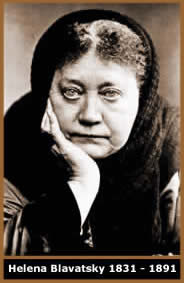
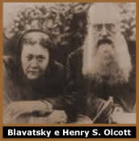

Helena Patrovna Hahn Fadéef
nasceu em Ekaterinoslav, Russia; em 30 de julho de 1831. Era filha
de Pedro Hahn da família Macklenburg e de Helena Fadéef,
família nobre que lhe concedeu uma educação
completa: pianista e conhecimento profundo em idiomas e literatura.
Em
sua infância, alguns presságios atribuíam
a Helena um aspecto misterioso e catastrófico. Em seu batizado,
acidentalmente a túnica do sacerdote foi incendiada, ferindo
e assustando alguns que estavam presentes na cerimônia.
Anos mais tarde, Helena brigou com um colega e ameaçou
enviar-lhe um diabo que lhe faria cócegas até a
morte. O garoto aterrorizado correu, escorregou e caiu num rio
morrendo afogado.
Após a morte de sua mãe, foi enviada
para a companhia de seu avó, o governador de Saratov, que
vivia num castelo que diziam ser encantado. Aos cinco anos era
capaz de hipnotizar; e aos quinze utilizava-se da clarividência.
Esteve na França e Inglaterra em 1845 e
em 1848. Contra sua vontade, casou-se aos 17 anos com o general
Nicephore V. Blavatsky, 51 anos, governador de Etivan. Porém,
seu matrimônio durou apenas três meses. Helena fugiu
de casa e foi para Constantinopla, onde permaneceu o tempo necessário
para legalizar o processo de separação.
No Egito conviveu com um mestre Copta que a iniciou
em ciências ocultas. Através desse mestre, tomou
conhecimento das Estâncias de Dzyan; um livro guardado
num mosteiro tibetano que continha ensinamentos ocultos da sabedoria
Oriental antiga. No ano de 1851 em Londres, recebeu a missão
de um mestre hindu de fundar uma sociedade espiritualista transcendental.
A partir deste momento, deu início a sua
peregrinação pelo mundo, passando por Canadá,
Estados Unidos, México, Peru, Índia, Ceilão
e Nepal. Conheceu as colônias holandesas e Cingapura em
1853, sempre bancada por seu pai e a herança de uma tia.
Sua volta ao mundo se estendeu até 1867, chegando a residir
em Cáucaso e Ucrânia. Helena ainda permaneceu alguns
meses no Tibet, onde recebeu a Iniciação. Seguiu
para o Cairo, Palestina e Grécia, onde foi ferida na Batalha
de Mentana. De volta a Londres, conhece Kout Houmi Lal Singh,
um misterioso personagem com quem passou a se corresponder. Helena
recebeu As Estâncias de Dzyan de um grupo ocultista indiano.
Porém, em uma viagem a Calcutá, passou a ser pressionada
para devolvê-lo; caso contrário, sua vida seria abalada
por diversas infelicidades. Helena adoeceu mas ainda perambulou
pela Europa. No decorrer dos anos, fatos estranhos a atormentaram:
o navio que viajava explodiu em 1871 e ainda foi vítima
de uma tentativa de assassinato. Assustada com essas ocorrências,
decide ceder as pressões e entregar o livro.
No ano de 1872 em Paris, Madame Blavatsky, como
também era conhecida, tentou pela primeira vez fundar uma
sociedade ocultista. Nessa longa peregrinação, Helena
desenvolveu suas habilidades psíquicas através de
treinamentos e experiências ritualísticas. No mesmo
ano foi residir em Nova York, entrando em contato com o movimento
espírita Irmão Eddy, com os Mórmons
e estudou Voodoo.
Depois
de breves viagens pela Europa Oriental em 1873, retornou para
Nova York. No ano seguinte, conheceu o norte americano Cel. Henry
Steel Olcott, com quem fundou a Sociedade Teosófica
em 1875. Dois anos mais tarde, lançou Isis sem Véu,
que contêm mais de 1.300 páginas e esgotou-se no
primeiro dia de lançamento; deu continuidade aos primeiros
conceitos sólidos da Sociedade. Helena também lançou
a revista The Theosophist; e a sede da Sociedade foi
transferida para Madras, Índia. Por todo este período,
sofreu pressão de grupos indianos para que nada fosse revelado
sobre As Estâncias de Dzyan.
No ano seguinte, viajou para a Europa mas se estabeleceu
na Índia. Em 1885, adoeceu e foi para a Alemanha, onde
deu início ao trabalho de A Doutrina Secreta. Em maio de
1887, foi morar em Londres, e lançou a segunda revista
Lúcifer (Lúcifer significa literalmente
Portador da Luz). Publicou A Doutrina Secreta
e fundou a Escola Esotérica em 1888. Em 1889 publicou
A Chave para a Teosofia e A Voz do Silêncio.
Finalmente em 1890, estabeleceu definitivamente a sede da Sociedade
Teosófica em Londres; aonde veio a falecer em 8 de maio
de 1891, sendo cremada no Working Crematorium.
Helena Blavatsky foi um dos principais ícones
da ciência e ocultismo do século XIX. Seus Mestres
a chamavam de Upasika. Na Rússia era conhecida
pelo seu pseudônimo literário, Radha Bai,
e considerada a reencarnação de Paracelso.
Blavatsky é a responsável pela introdução
do conhecimento oriental do Ocidente, incluindo os conceitos de
Karma e Reencarnação; além
de expor ao mundo a idéia de que todas as religiões
partem de uma única base primitiva.
Suas obras A Doutrina Secreta, Isis
sem Véu, A Voz do Silêncio e O
Simbolismo Arcaico das Religiões, teriam sido inspiradas
através da leitura por clarividência de As Estâncias
de Dzyan. O crítico inglês William Emmett Coleman,
calculou que para escrever Isis sem Véu, Blavatsky
precisaria ter estudado 1400 livros por ela desconhecidos. Mas
sua grande contribuição é, sem dúvida
alguma, a Sociedade Teosófica. Após mais de cem
de sua fundação, possui adeptos em toda parte do
mundo e permanece estabelecida como uma das principais bases de
conhecimento da atualidade.
Teosofia
A palavra Teosofia vem do grego Theosophia
e significa literalmente Sabedoria Divina. Seus primeiros
registros históricos se encontram no Egito do século
III, cunhados por Amônio Saccas e seu discípulo Plotino,
filósofos neoplatônicos fundadores da Escola
Teosófica Eclética. A Sociedade Teosófica
contemporânea é a sucessora desta Escola.
O termo Teosofia também adquiriu um significado
secundário de verdade relativa. Na Filosofia Oriental é
conhecida como Filosofia Esotérica ou Oculta,
ou ainda Pensamento Teosófico. Esses termos foram
criados para distingui-la do significado primitivo.
Sociedade Teosófica
"As doutrinas
fundamentais de todas as religiões se comprovarão
idênticas em seu significado esotérico, uma vez que
sejam desagrilhoadas
e libertadas do peso morto das interpretações dogmáticas,
dos nomes pessoais,
das concepções antropomórficas e dos sacerdotes
assalariados".
 Fundada
em Nova York, no dia 8 de setembro de 1875 por um pequeno grupo
onde se destacavam Helena Blavatsky e o Cel. Henry Steel Olcott,
a Sociedade Teosófica teve sua sede internacional legalmente
estabelecida em 3 de abril de 1905, na cidade de Chennai, sul
da Índia.
Fundada
em Nova York, no dia 8 de setembro de 1875 por um pequeno grupo
onde se destacavam Helena Blavatsky e o Cel. Henry Steel Olcott,
a Sociedade Teosófica teve sua sede internacional legalmente
estabelecida em 3 de abril de 1905, na cidade de Chennai, sul
da Índia.
A Sociedade Teosófica não pode ser
definida como uma religião, e sim um credo. Seu lema é
"Não Há Religião Superior à
Verdade, do sânscrito Satyan nasti para Dharmah".
Sendo que a palavra Dharmah significa entre outros Doutrina,
Dever, Justiça ou Lei.
Os adeptos de diversas religiões aderiram
a Sociedade Teosófica no decorrer de seu desenvolvimento;
pois não é necessário abandonar crença
ou dogmas, basta aceitar seus objetivos primários. Os objetivos
da Sociedade Teosófica estão baseados na Fraternidade
Humana e na Busca da Verdade:
1º - Formar um
núcleo da Fraternidade Universal da Humanidade, sem distinção
de raça, credo, sexo, casta ou cor.
2º - Encorajar
o estudo de Religião Comparada, Filosofia e Ciência.
3º - Investigar
as leis não explicadas da Natureza e os poderes latentes
no homem.
Embora não atue diretamente nas causas religiosas,
sociais, políticas e econômicas, a Sociedade Teosófica
tem seu poder transformador agindo em seus membros. Através
de seus objetivos promove a superação da ignorância
e dogmatismo individual, por conseqüência, há
uma mudança no coletivo humano.
Por
Spectrum